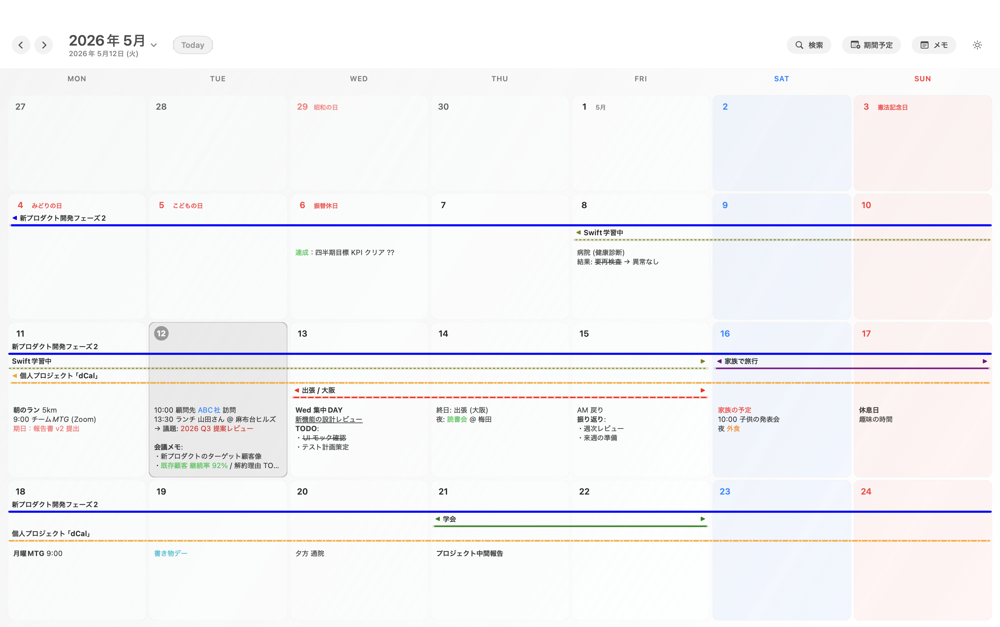
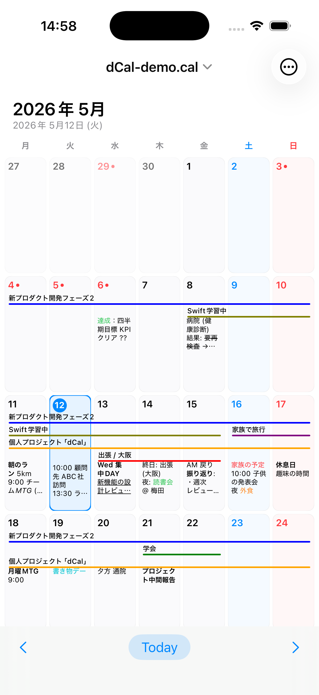
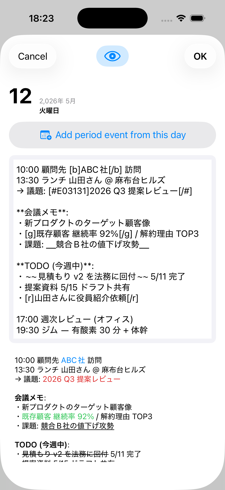
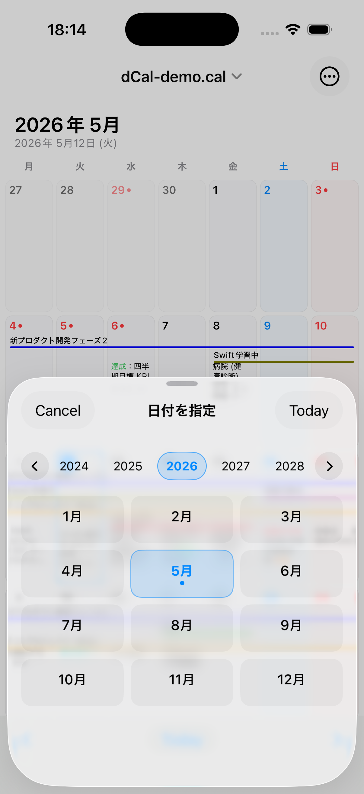
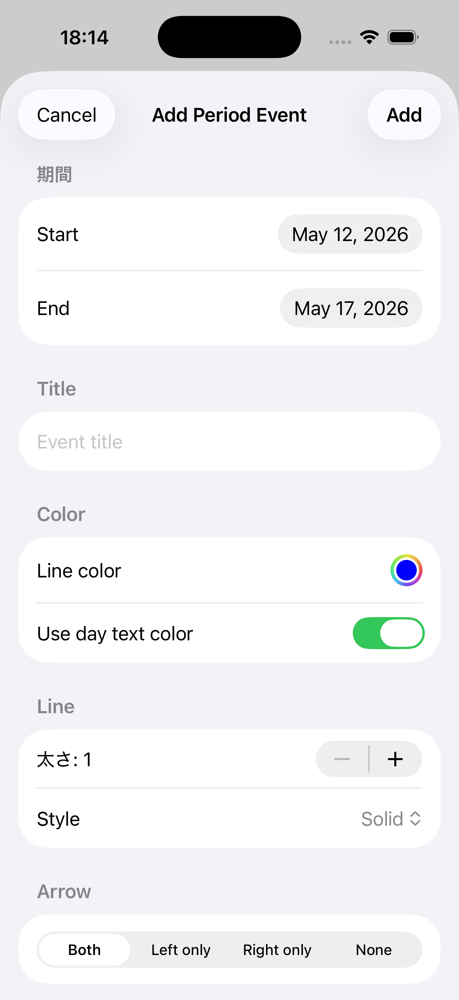
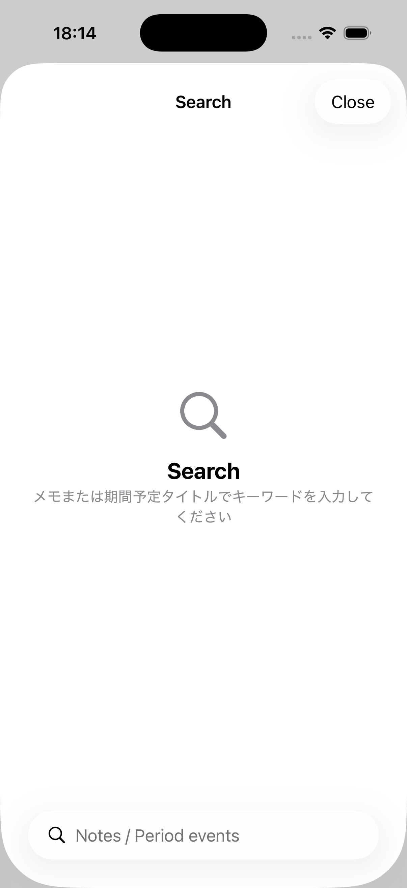
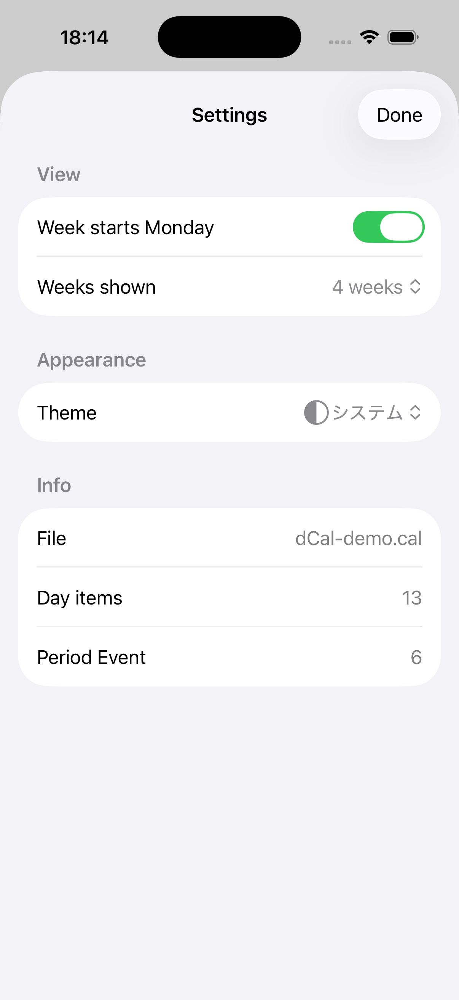

4 週グリッドで月またぎが見える
3〜6 週まで切り替え可能。期間予定はカラーラインで月境を貫いて連続表示。 Apple Calendar の月表示では分断される予定も一望できます。
予定もメモも、あなたのデバイスの中で完結する macOS / iOS カレンダー。 アカウント不要、サブスクなし。同期方法もあなたが選べます。
¥2,500 一括 / Universal Purchase (Mac + iOS)
demo データを開いた macOS 版の実画面。 4 週連続グリッドの中に、色付き期間予定 (帯) と日付ごとのメモが 並んで表示されます。日付タップでフォーマット付きの長文メモ画面が 開きます。



iPhone 版でも同じ .cal ファイルを開けます。
iCloud Drive・Dropbox 経由なら Mac で書いたメモがそのまま iPhone でも
読めます。タップで開く編集画面では、Mac 版と同じ書式タグが使えます。






| クラウド型カレンダー | dCal（ローカルファースト型） |
|---|---|
| アプリがメーカー独自サーバーへ自動送信 | アプリ自身は一切通信しない |
| AI 学習・広告ターゲティング対象になる可能性 | アプリ経由で学習データに使われることはありません |
| アカウント乗っ取りで全予定流出リスク | アカウント自体が存在しない |
| サブスク終了でデータ閉じ込め | プレーンテキストで永久保存・どこへでも持ち運び可 |
| 同期はメーカー指定の方法のみ | 同期方法はあなたの自由（iCloud / Dropbox / 同期なし） |
| 月単位表示。月またぎの予定は分断 | 4 週連続グリッド |
| 予定はタイトル中心 | 1 日に長文メモ＋装飾 |
$ codesign -d --entitlements - dCal.app
com.apple.security.app-sandbox ← 有効
com.apple.security.files.user-selected ← 有効（ファイル選択時のみ）
com.apple.security.network.client ← 不存在
com.apple.security.network.server ← 不存在macOS の App Sandbox がネットワーク権限を一切許可していないため、 dCal は外部サーバーへ接続したくてもできません。 ファイル同期に iCloud Drive や Dropbox を使う場合、データはそれらの クラウドを経由しますが、それは「あなたが選んだ同期方法」であり、 dCal アプリ自体がデータを送信することはありません。
3〜6 週まで切り替え可能。期間予定はカラーラインで月境を貫いて連続表示。 Apple Calendar の月表示では分断される予定も一望できます。
会議メモ・業務日誌・家族の連絡事項 — 太字・斜体・下線・色付けなど Markdown 風の装飾も可能。本文全文検索で過去のメモを瞬時に発掘。
振替休日・国民の休日も自動表示。1980〜2099 年に対応した 国民の祝日法ベースの計算ロジックを内蔵。
年スクロール + 12 か月グリッドのポップオーバー。 2003 年でも 2099 年でも 2 クリックで遡れます。
日付メモ・期間予定タイトルを全件横断。マッチハイライト付き。 数千エントリのファイルでも瞬時。
iCloud Drive / Dropbox / Google Drive / OneDrive ／ ローカルのみ —
お好みの方法で .cal ファイルを共有できます。dCal は
そのサービスの API を叩かず、同期済みのローカルファイルを読むだけ。
独自バイナリ形式ではなく、テキストとして読める形式で保存。 20 年後に dCal がなくても、データは生き続けます。
Windows 用フリーソフト hyCalendar
の .cal ファイルをそのまま開けます。バイト単位の完全互換。
長年 hyCalendar を使ってきた方の Mac 移行先として最適です。
顧問先名・案件名は守秘義務上クラウドに置けない
患者氏名・診療予定は個人情報保護法対象
M&A・人事会議など機密スケジュール
業務ログ・取材予定を長文で残したい
クラウドアカウントなしで 4 週間先を一望
長年使ってきた .cal をそのまま継続
¥2,500 一括
Universal Purchase で Mac + iOS 両方利用可
あなたが選んだ場所です。ローカルディスクのみで完結させることも、 iCloud Drive や Dropbox 等の同期フォルダに置いて他デバイスと共有することもできます。 重要なのは どこに置くかはあなたが決める という点です。 dCal アプリ側からはどのクラウドサービスへも自動送信されません。
ありません。dCal はアプリ単体ではクラウドサービスと通信しない設計です。
代わりに iCloud Drive / Dropbox / Google Drive / OneDrive 等の
汎用ファイル同期サービスを使えば、自分で .cal
ファイルを複数デバイス間で同期できます。完全オフライン運用も可能です。
はい、その通りです。iCloud Drive や Dropbox にファイルを置けば、 それらのクラウドサービスにデータが保存されます。ただし dCal アプリ自身は どのクラウドサービスとも通信しないので、「どのクラウドを使うか」 「そもそも使わないか」を完全にあなたが選べます。 クラウド型カレンダー（Google Calendar 等）は同期方法そのものが固定で、 必ずメーカーのサーバーを経由します。そこが根本的な違いです。
はい、バイト単位で完全互換です。実ファイル (3MB+ / 7,000日項目 / 1,700期間予定) でも問題なく開けます。
dCal アプリ経由で外部に送信されることはありません。 iCloud Drive / Dropbox 等を経由して保存する場合、その後のデータ取扱は 当該クラウドサービスのプライバシーポリシーに従います。 外部送信を完全に避けたい場合はローカル保存のみでの運用が可能です。
2027 年に対応予定です。お問い合わせください。